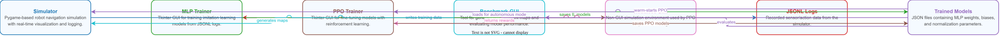
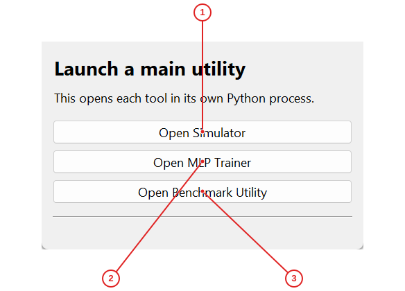
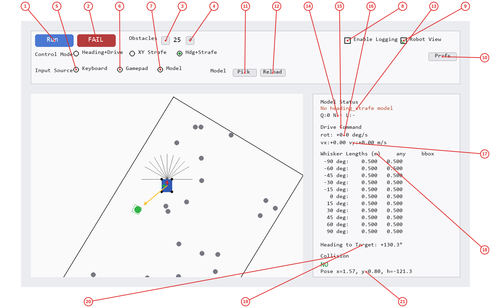
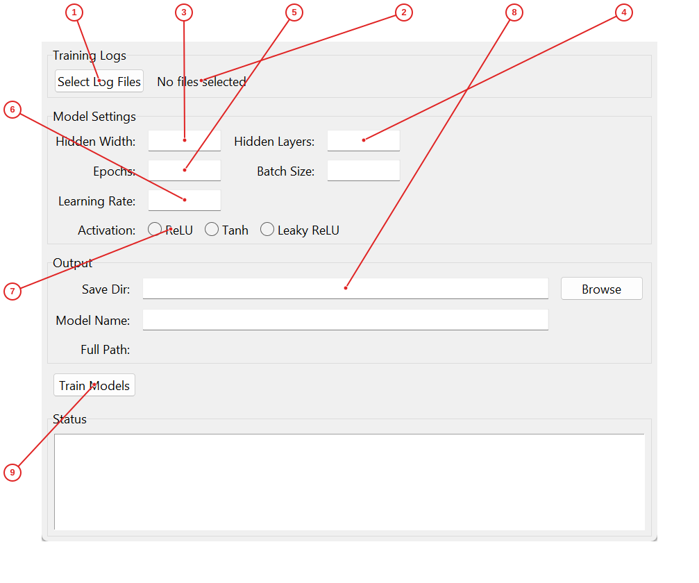
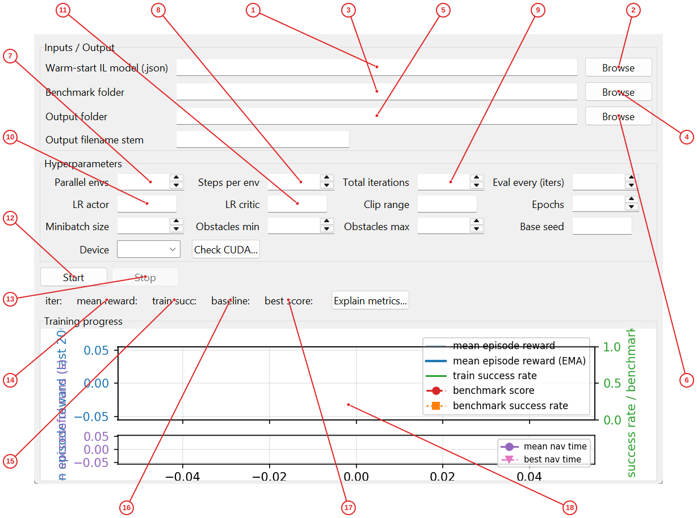
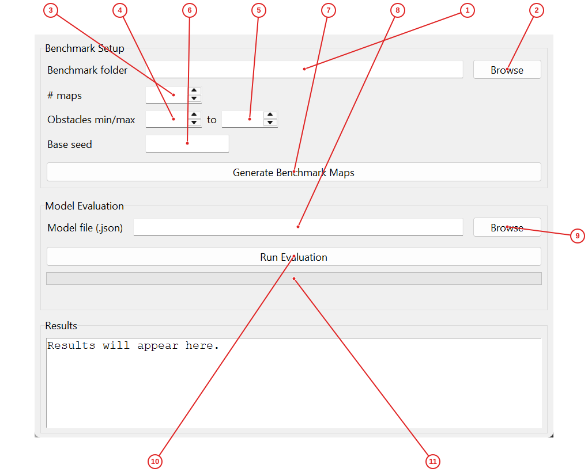

RoboSim Navigation Trainer is an educational robot navigation simulator that lets students explore robot control, sensor processing, and machine‑learning training. It provides a 2‑D pygame visualisation of a robot equipped with whisker‑style range sensors, tools to record interaction logs, and GUIs for training imitation‑learning (MLP) and reinforcement‑learning (PPO) models. The suite also includes a benchmark generator and evaluator to compare model performance on standardized maps. Designed for students and researchers, the project demonstrates the full data‑flow pipeline from simulation to model deployment.
pip install -r requirements.txt).python UTILITY_LAUNCHER.py to open the Utility Launcher.RoboSim Navigation Trainer requires Python 3.8+ and the following packages:
pip install -r requirements.txt
The requirements.txt typically includes:
- pygame — for the simulator rendering
- numpy — for numerical computations
- torch — for PPO neural networks (if using train_ppo.py)
- matplotlib — for training plots
- gym — for the headless environment interface
If you plan to use the PPO trainer with GPU acceleration, ensure you have a CUDA-compatible GPU and install the appropriate torch version with CUDA support.
Note: The project uses pygame-ce (Community Edition), which is a fork of pygame with continued maintenance.
The project is organized as follows:
RoboSim_Navigation_Trainer/
├── UTILITY_LAUNCHER.py # Desktop hub for launching all tools
├── simulator.py # Main pygame-based navigation simulator
├── sim_core.py # Core robot physics and obstacle generation
├── train_mlp.py # MLP imitation learning trainer (Tkinter GUI)
├── train_ppo.py # PPO reinforcement learning trainer (Tkinter GUI)
├── benchmark_gui.py # Benchmark map generator and model evaluator
├── headless_sim.py # Non-GUI simulation environment for training
├── nav_env.py # OpenAI Gym-compatible environment wrapper
├── requirements.txt # Python dependencies
├── logs/ # Directory for simulator JSONL log files
├── trained_models/ # Output directory for saved model JSON files
├── benchmark/ # Benchmark map files for standardized evaluation
├── dagger_snapshots/ # Snapshot directory for DAgger iterations
├── images/ # Simulator image assets (if any)
└── Docs3/ # Auto-generated documentation (this README lives here)
Key modules for students:
- simulator.py + sim_core.py — Understand robot kinematics, whisker sensor math, and environment generation.
- train_mlp.py — Study how imitation learning converts logs into neural network weights.
- train_ppo.py — Explore policy gradient methods and actor-critic architectures.
The diagram below shows how data flows between the main modules of RoboSim Navigation Trainer.

Before using the tools, understand these key concepts:
Whisker sensors — The robot is equipped with 11 virtual whiskers (like a cat's whiskers) spaced at angles from -90° to +90°. Each whisker measures the distance to the nearest obstacle (up to 0.5 m). These distances are the primary input to the navigation models.
Control modes — The robot supports three control schemes:
- Heading+Drive: Outputs are drive_speed (forward/back) and rotation_rate (turning speed).
- XY Strafe: Outputs are vx and vy (velocity in x/y directions).
- Hdg+Strafe: Combined outputs: rotation_rate, vx, vy.
Imitation Learning (IL) — Also called learning from demonstration. You drive the robot manually while it records (whisker readings → your actions). A neural network then learns to mimic your driving behavior.
MLP (Multi-Layer Perceptron) — A feedforward neural network with one or more hidden layers. The train_mlp.py tool trains an MLP using your recorded logs.
PPO (Proximal Policy Optimization) — A reinforcement learning algorithm that improves the model by running many parallel simulations, collecting rewards, and updating the policy. PPO can start from (warm-start) an IL model and fine-tune it.
DAgger — Dataset Aggregation, an iterative process where the model drives, the human corrects mistakes, and the model retrains on the combined data. The simulator supports DAgger snapshots.
JSONL logs — Each line is a JSON object containing a history of whisker lengths, target bearing, and the action taken. These files are the training data for IL.
Benchmark maps — Standardized obstacle layouts generated with a fixed random seed. They allow fair comparison between different models.
Start the robot navigation simulator, drive the robot using keyboard or gamepad, and generate training logs for imitation learning.
Run python UTILITY_LAUNCHER.py and click Open Simulator (1) to launch the simulator.
In the Simulator Main Window, click Run (1) to start a new episode with random robot pose and obstacles.
Select input mode: Keyboard (5) for WASD/arrow keys, Gamepad (6) for joystick, or Model (7) for autonomous mode.
Drive the robot toward the green target while avoiding gray obstacles. Whisker readouts (17) show distances to obstacles.
Toggle Enable Logging (8) to record sensor/action data to JSONL files for later training.
When finished, click Fail (2) to end the episode and save logs to the logs/ directory.
Hub window for launching all RoboSim tools in separate processes.

Labeled controls and displays:
Open Simulator — Launches simulator.py in a new Python process.
Open MLP Trainer — Launches train_mlp.py in a new Python process.
Open Benchmark Utility — Launches benchmark_gui.py in a new Python process.
Click Open Simulator (1) to start the navigation simulator. Click Open MLP Trainer (2) to train imitation learning models from logs. Click Open Benchmark Utility (3) to generate benchmark maps and evaluate model performance. The status bar at the bottom shows which tool was last launched.
Pygame-based robot navigation simulation with real-time controls and sensor readouts.

Labeled controls and displays:
Run button — Starts a new navigation episode with random robot pose and obstacles.
Fail button — Terminates the current episode and writes logs if logging is enabled.
Obstacle minus — Decreases the number of obstacles in the simulation by one.
Obstacle plus — Increases the number of obstacles in the simulation by one.
Keyboard radio — Switches input to keyboard control (WASD/arrow keys).
Gamepad radio — Switches input to connected gamepad/joystick.
Model radio — Switches to autonomous mode using a loaded IL/RL model.
Enable Logging — Toggles recording of sensor/action data to JSONL log files.
Robot View — When checked, the simulation view rotates to follow the robot heading.
Preferences — Opens the preferences dialog for advanced simulation settings.
Model Pick — Opens file dialog to select a trained model JSON file.
Model Reload — Reloads the currently selected model from disk.
Model Status — Shows which control-mode model is loaded or 'No model' if none.
Episode counters — Displays current episode/step counts (Q=episodes, N=steps, L=logs).
Drive Command — Section header for the current control-mode outputs.
Rotation rate — Live readout of robot's current turning speed in deg/s.
Velocity readout — Live readout of robot's linear velocity components in m/s.
Whisker readouts — Section header for the 11 whisker distance measurements to obstacles.
Heading to Target — Current bearing from robot to target in degrees (positive = clockwise).
Collision status — Displays 'YES' if robot is currently colliding with an obstacle or wall.
Robot Pose — Live readout of robot position (x,y) in meters and heading in degrees.
Use Run (1) to start a new episode and Fail (2) to terminate the current episode. Adjust obstacle count with the +/- buttons (3-4). Select input source: Keyboard (5), Gamepad (6), or Model (7). Toggle Enable Logging (8) to record training data and Robot View (9) to align display with robot heading. Open Preferences (10) to adjust advanced settings. When in Model mode, use Pick (11) to select a trained model and Reload (12) to refresh. The right panel shows live readouts: model status (13), episode/step counters (14), drive commands (15-16), whisker lengths (17), heading to target (18), collision status (19), and robot pose (20).
Use the MLP Trainer to teach a neural network to mimic your navigation behavior from recorded logs.
First, generate training logs by running the simulator with logging enabled (see 'Launch and navigate the simulator' workflow).
Run python UTILITY_LAUNCHER.py and click Open MLP Trainer (2) to open the MLP Trainer.
In the MLP Trainer, click Select Log Files (1) and choose the JSONL files from the logs/ directory.
Configure network architecture: set Hidden Width (3), Hidden Layers (4), Epochs (5), Batch Size, and Learning Rate (6).
Choose an activation function: ReLU, Tanh, or Leaky ReLU (7).
Set the Save Dir (8) and optional Model Name, then click Train Models (9) to start training.
The status area shows training progress. When complete, model JSON files are saved to the output directory.
GUI for training multi-layer perceptron models from navigation logs using imitation learning.

Labeled controls and displays:
Select Log Files — Opens file dialog to pick JSONL navigation log files.
File count — Shows how many log files are currently selected.
Hidden Width — Number of neurons in each hidden layer of the MLP.
Hidden Layers — Number of hidden layers in the neural network.
Epochs — Number of complete passes through the training dataset.
Learning Rate — Step size for gradient descent during training.
ReLU radio — Selects ReLU activation for hidden layers.
Save Dir — Folder where trained model JSON and metrics are saved.
Train Models — Starts imitation learning training for all modes found in logs.
Click Select Log Files (1) to choose one or more JSONL log files. The file count appears in the label (2). Configure the network architecture: Hidden Width (3) sets neurons per layer, Hidden Layers (4) sets depth. Set Epochs (5) and Learning Rate (6), then choose an activation function via the radio buttons (7). Specify the Save Dir (8) and optional Model Name, then click Train Models (9) to start training. The status area shows progress and saved file paths.
Improve a trained imitation learning model using Proximal Policy Optimization in headless simulation.
Run python train_ppo.py to open the PPO Trainer.
Enter the path to a trained IL model in Warm-start IL model (1) or click Browse (2) to select it.
Set Benchmark folder (3) and Output folder (4-5) for evaluation and model saving.
Configure hyperparameters: Parallel envs (7), Steps per env (8), Total iterations (9), learning rates (10-11), and others.
Click Start (12) to begin PPO training. The live plot (18) shows reward, success rates, and benchmark scores.
Monitor the readouts: mean reward (13), train succ (14), baseline (15), and best score (16).
Click Stop (13) to halt training early. The best model is saved automatically.
GUI for fine-tuning navigation models using Proximal Policy Optimization with live plots.

Labeled controls and displays:
Warm-start model — Path to a pre-trained IL model JSON to initialize PPO.
Browse warm-start — Opens file dialog to pick IL model JSON file.
Benchmark folder — Directory containing benchmark map files for evaluation.
Browse benchmark — Opens directory chooser for benchmark maps.
Output folder — Directory where PPO model checkpoints will be saved.
Browse output — Opens directory chooser for output models.
Parallel envs — Number of parallel simulation environments for training.
Steps per env — Simulation steps per environment per PPO iteration.
Total iterations — Number of PPO training iterations to run.
LR actor — Learning rate for the PPO actor network.
LR critic — Learning rate for the PPO critic network.
Start button — Starts the PPO training loop in a background thread.
Stop button — Stops the currently running training loop.
Mean reward — Live readout of mean episode reward (last 200 episodes).
Train success — Live readout of training success rate (0-1).
Baseline score — Benchmark score of the warm-start IL model.
Best score — Best PPO benchmark score achieved so far.
Training plot — Live matplotlib plot of reward, success rates, and benchmark scores.
Enter the Warm-start IL model path (1) or browse (2) to load a pre-trained imitation learning model. Set Benchmark folder (3) and Output folder (4-5). Configure hyperparameters: Parallel envs (7), Steps per env (8), Total iterations (9), learning rates (10-11), Clip range (12), Epochs (13), Minibatch size (14), obstacle counts (15-16), and Base seed (17). Choose Device (18) and click Start (12) to begin PPO training. The live plot (18) shows reward, success rates, and benchmark scores.
Generate standardized test maps and measure model performance with success rates and navigation times.
Run python UTILITY_LAUNCHER.py and click Open Benchmark Utility (3) to open the Benchmark Evaluator.
In the Benchmark Setup section, set Benchmark folder (1) and number of # maps (3) to generate.
Configure obstacle range with Obstacles min/max (4-5) and Base seed (6), then click Generate Benchmark Maps (7).
For evaluation, enter the Model file path (8) or click Browse (9) to select a trained model JSON.
Click Run Evaluation (10). Progress appears in the bar (11) and detailed results show in the text area.
Results include success rate, mean navigation time, and benchmark score for the model.
GUI for generating benchmark maps and evaluating model performance on standardized scenarios.

Labeled controls and displays:
Benchmark folder — Directory where benchmark map files are stored.
Browse benchmark — Opens directory chooser for benchmark maps.
# maps — Number of benchmark maps to generate.
Obstacles min — Minimum number of obstacles per benchmark map.
Obstacles max — Maximum number of obstacles per benchmark map.
Base seed — Random seed for reproducible map generation.
Generate Maps — Creates benchmark maps with specified parameters.
Model file — Path to trained model JSON file for evaluation.
Browse model — Opens file dialog to select model JSON.
Run Evaluation — Evaluates model on all benchmark maps and reports metrics.
Progress bar — Shows evaluation progress across benchmark maps.
Enter the Benchmark folder (1) or browse (2) to set where maps are stored. Set # maps (3) to generate, plus obstacle min/max (4-5) and Base seed (6). Click Generate Benchmark Maps (7) to create standardized test scenarios. For evaluation, enter the Model file path (8) or browse (9), then click Run Evaluation (10). Progress appears in the bar (11) and detailed results show in the text area.
Although the primary tools are GUIs, you can also launch each module directly from the command line.
UTILITY_LAUNCHER.pyDesktop hub that opens other tools in separate processes.
python UTILITY_LAUNCHER.py
simulator.pyMain navigation simulator with pygame rendering.
python simulator.py
Interactive controls:
- W/S or arrow keys: drive forward/backward
- A/D or arrow keys: turn left/right
- Space: toggle logging on/off
- R: start new episode (Run)
- F: fail current episode
- 1: switch to Keyboard input
- 2: switch to Gamepad input
- 3: switch to Model (autonomous) mode
- 4: Heading+Drive control mode
- 5: XY Strafe control mode
- 6: Hdg+Strafe control mode
train_mlp.pyImitation learning trainer for MLPs.
python train_mlp.py
train_ppo.pyPPO reinforcement learning fine-tuning.
python train_ppo.py
benchmark_gui.pyBenchmark map generator and model evaluator.
python benchmark_gui.py
headless_sim.pyNon-GUI simulation environment (used by PPO trainer).
# Typically called internally by train_ppo.py
python headless_sim.py
simulator_prefs.json)The simulator saves user preferences to simulator_prefs.json in the project root. You can edit this file directly or use the Preferences dialog (button 10 in the simulator).
| Setting | Description | Default |
|---|---|---|
history_len |
Number of timesteps in the input window (1–10) | 1 |
active_log_rate_hz |
Logging frequency when obstacles are near (1–30 Hz) | 10.0 |
min_turn_rate_dps |
Minimum turn rate in degrees/sec (0–39) | 0.0 |
inner_deadband_dps |
Deadband around zero turn rate (0–min_turn_rate) | 0.0 |
hysteresis_band_dps |
Hysteresis band to prevent jitter (0–min_turn_rate) | 0.0 |
obstacle_count |
Default number of obstacles per episode (1–50) | random 3–10 |
vis_mode |
Visualization mode: all, action_radius, detected, sparse_sensing |
all |
input_mode |
Default input: keyboard, gamepad, model |
keyboard |
logging_enabled |
Whether logging is on by default | false |
robot_aligned_view |
Whether the view follows the robot heading | true |
control_mode |
Default control: heading_drive, xy_strafe, heading_strafe |
heading_drive |
place_against_wall |
Place target against a wall | false |
Trained models are saved as JSON files with the following structure:
{
"schema_version": 2,
"mode": "heading_drive",
"weights": [ [...], ...], // List of weight matrices
"biases": [ [...], ...], // List of bias vectors
"x_scale": { "mean": [...], "std": [...] }, // Input normalization
"y_scale": { "mean": [...], "std": [...] }, // Output normalization
"history_len": 1
}
pygame is installed (pip install pygame).xvfb).joystick package and run jstest to verify.history_len as expected by the model.cpu if you don’t have a compatible GPU.Generated by auto_labeler.